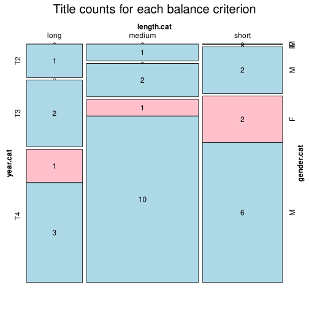

Click on a column heading to sort. Click on a text identifier to read the text (may not work in older browsers).
| Identifier | Encoding | Pages | Words | (Size) | Date (Slot) | Title | Author | Sex | Reprints |
|---|---|---|---|---|---|---|---|---|---|
| LAV0029JD |
eltec-0 | 191 | 60729 | (medium) | 1935 (T3) | Aija | Deglavs, Augusts (1862-1922) | M | unspecified |
| LAV0054JD |
eltec-1 | 216 | 45316 | (short) | 1908 (T4) | Pedagogi | Birkerts, Antons (1876-1971) | M | low |
| LAV103063 |
eltec-1 | 1162 | 238911 | (long) | 1912 (T4) | Patrioti | Deglavs, Augusts (1862-1922) | M | low |
| LAV1040959 |
eltec-1 | 176 | 57886 | (medium) | 1891 (T3) | Indriķis, jeb Greizsirdības upuri. Oriģinalromans iz Baltijas zemnieku sadzīves jaunākiem laikiem | Kaukazietis (1865-1932) | M | low |
| LAV1040964 |
eltec-1 | 272 | 64436 | (medium) | 1912 (T4) | Zem saules | Skuju Frīdis (1887–1942) | M | low |
| LAV413085 |
eltec-1 | 544 | 162316 | (long) | 1879 (T2) | Mērnieku laiki | Kaudzīte, Reinis (1839-1920); Kaudzīte, Matīss (1848-1926) | M | high |
| LAV413173 |
eltec-1 | 504 | 146974 | (long) | 1901 (T4) | Līduma dūmos | Niedra, Andrievs (1871-1942) | M | high |
| LAV413464 |
eltec-1 | 151 | 35308 | (short) | 1891 (T3) | Vecais pilskungs | Deglavs, Augusts (1862-1922) | M | low |
| LAV414717 |
eltec-1 | 152 | 32576 | (short) | 1895 (T3) | Pērļu zvejnieks | Poruks, Jānis (1871-1911) | M | high |
| LAV416277 |
eltec-1 | 338 | 90674 | (medium) | 1879 (T2) | Sadzīves viļņi | Māters, Juris (1845-1885) | M | low |
| LAV419386 |
eltec-1 | 344 | 73393 | (medium) | 1905 (T4) | Zvaigžņotās naktis | Eldgasts, Haralds (1882-1926) | M | low |
| LAV420132 |
eltec-1 | 894 | 185514 | (long) | 1913 (T4) | Iedzimtais grēks | Kaija, Ivande (1876-1942) | F | high |
| LAV771019 |
eltec-1 | 266 | 59117 | (medium) | 1902 (T4) | Liktenis | Zeiboltu, Jēkabs (1867-1924) | M | low |
| LAV771025 |
eltec-1 | 235 | 56838 | (medium) | 1904 (T4) | Savs kaktiņš, savs stūrītis zemes. No Latvijas arāju dzīves. | Purapuķe, Jānis (1864-1902) | M | low |
| LAV771027 |
eltec-1 | 272 | 66515 | (medium) | 1909 (T4) | Zeltenīte | Deglavs, Augusts (1862-1922) | M | low |
| LAV771035 |
eltec-1 | 294 | 73928 | (medium) | 1903 (T4) | Kad mēness dilst | Niedra, Andrievs (1871-1942) | M | low |
| LAV771063 |
eltec-1 | 700 | 301124 | (long) | 1899 (T3) | Jaunā pasaule | Deglavs, Augusts (1862-1922) | M | low |
| LAV771067 |
eltec-1 | 191 | 32342 | (short) | 1907 (T4) | Rīga | Poruks, Jānis (1871-1911) | M | low |
| LAV771071 |
eltec-1 | 256 | 60780 | (medium) | 1912 (T4) | Sikspārnis | Niedra, Andrievs (1871-1942) | M | low |
| LAV771096 |
eltec-1 | 758 | 194255 | (long) | 1891 (T3) | Starp divām ugunīm | Deglavs, Augusts (1862-1922) | M | low |
| LAV771400 |
eltec-1 | 85 | 21877 | (short) | 1912 (T4) | Degoša sala | Akuraters, Jānis (1876-1937) | M | low |
| LAV869205 |
eltec-1 | 224 | 60371 | (medium) | 1904 (T4) | Skaistā Adelīna, jeb Mīlestība un briesmas. Jaunlaiku oriģinalromans iz Rigas sadzīves | Cilinskis, Kārlis (1845-1912) | M | low |
| LAV869208 |
eltec-1 | 192 | 51138 | (medium) | 1904 (T4) | Mantu, asinis, dzīvību uz Tēvijas altāra | Zemzarītis (?-?) | M | low |
| LAV869224 |
eltec-1 | 677 | 104499 | (long) | 1900 (T4) | Vīriešu krietnums un sieviešu untums | Dinsbergs, Ernests (1816-1902) | M | low |
| LAV883565 |
eltec-1 | 108 | 24515 | (short) | 1911 (T4) | Zem dzimtenes debesīm | Tirzmaliete (1876-1942) | F | low |
| LAV886318 |
eltec-1 | 383 | 81005 | (medium) | 1919 (T4) | Jūgā | Kaija, Ivande (1876-1942) | F | low |
| LAV886345 |
eltec-1 | 237 | 59502 | (medium) | 1920 (T4) | Olģerts Silarājs | Gulbis, Ansis (1873-1936) | M | low |
| LAV949290 |
eltec-1 | 112 | 23985 | (short) | 1912 (T4) | Krusts un Pusmēnesis | Zemzarītis (?-?) | M | low |
| LAV956072 |
eltec-1 | 84 | 20391 | (short) | 1909 (T4) | Lida Erik | Līcīte, Paula (1889-1966) | F | low |
| LAV956089 |
eltec-1 | 196 | 39355 | (short) | 1909 (T4) | Starp Sibiriju un Indiju, jeb, Tuksnešu varoņi | Vesers, Leons (?-?) | M | low |
| LAV956093 |
eltec-1 | 152 | 28337 | (short) | 1910 (T4) | Brīvības karotāji pie Sarkanās upes | Vesers, Leons (?-?) | M | low |